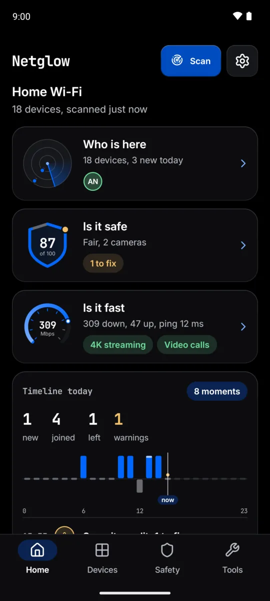
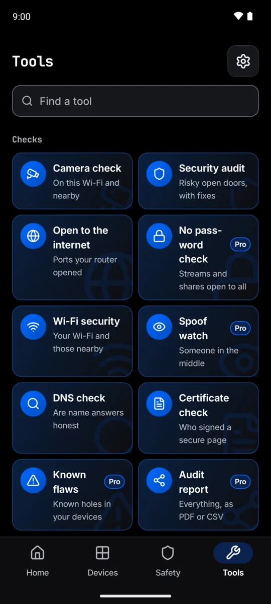
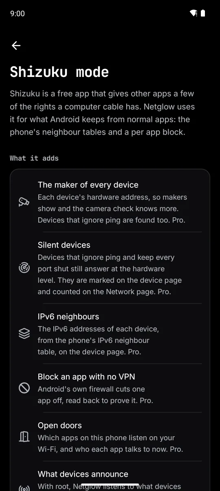

netglow
See who is on your Wi-Fi, give devices names that stay, and run a camera check that tells you what it cannot see. Scans are free and unlimited, with no account and no ads.
New in 1.84: About thanks wingetx for independent testing and technical feedback, and lists the credits again.
New in 1.82: App traffic shows connections live when Firewall runs in No VPN mode, with Shizuku or root. Your own VPN stays on.
New in 1.81: Text sizes are simpler and easier to read.
New in 1.80: Smaller titles that are easier to read.
New in 1.79: Network info is calmer: the green ring is gone, and Nothing to change is plain text in the card. A fix keeps its amber edged box. Long notes on Radio around you, and the intro paragraphs of Bluetooth, Cell, Doors, Security, Report, Self check, Root and the journal pages, now sit in cards. Self check ticks sit on a round circle.
New in 1.77: Settings is tidier: About and Widgets and tiles have pages of their own, and Privacy, Help and About sit at the end. The Security audit shows a Partial coverage block beside the score, and the PDF report has a fuller Security audit section.
This is the user guide, and the place to report bugs and ask for features. The app itself is on Google Play.

- No ads
- No account
- No analytics
- No subscription
What Netglow does
Who is on my Wi-Fi
One scan asks the network in several ways at once: ping, an IPv6 ping to all devices, mDNS, UPnP, NetBIOS and WS-Discovery, plus a short port check. It also reads names from devices' secure page certificates, and makers from IPv6 addresses that carry the hardware address. Each device shows its name, maker and model when it says them, its address, and how it was found.
Names that stay
Give a device your own name. Netglow knows it again by what it says about itself, even on a new address. A history shows when each device was online and what joined today.
A names file you keep
Every device, every name it gave itself and every rename you made is saved in a plain devices.json file, in a folder you pick. Remove the app or change phones, and your names come back from it.
Camera check
Lists devices on your Wi-Fi that answer as a camera or have video stream ports open, and says why each one was flagged. It also looks for camera hotspots nearby. It tells you plainly what it cannot see.
Network tools
Ping, traceroute, port check, DNS lookup with every record type and Wake on LAN. Your address, gateway, DNS and subnet. A router check, and how crowded each Wi-Fi channel is around you.
Shizuku mode
With the free Shizuku app running (Pro), Netglow reads the hardware address of every device on your Wi-Fi, so makers show and devices that answer only at the hardware level are found too. Open doors shows which apps on this phone listen on your Wi-Fi. With root, Netglow also hears what devices announce when they join.
Your apps, with Firewall
With Firewall, our free firewall app, Netglow shows which servers each app on this phone talks to. Block an app there and watch its connections stop, or block it with Shizuku mode (Pro).
Made to be easy to read
Big touch targets, strong contrast, text that grows to 200 percent, and two columns on a tablet.
Read the whole guide · Short recipes · Something not working?
A few screens

A score for your network and a plain fix. 
Every tool in one place. 
See where your Wi-Fi fades. 
A device page: what it is, and why. 
The timeline of who joined and who left. 
Shizuku mode: makers for every device.
Pro, paid once
Scans, names, the camera check and every tool are free. Pro is an optional extra, a one time payment on Google Play, with no subscription.
- Background watch
- A timeline of who joined your Wi-Fi and who left, hour by hour, and a note when something new joins. Checked every 15 minutes, or as often as you set.
- History for good
- Every scan and every day a device was online, kept for good, not just 30 days.
- Several networks
- Home, office and family, each with its own devices, to browse while you are away.
- Deep port check
- Up to 1000 ports, or a range you type, on any device.
- Shizuku makers
- The maker of every device from its hardware address, with the free Shizuku app.
- Silent devices and IPv6
- Devices that answer only at the hardware level, and the IPv6 addresses of each device. Shizuku required.
- Block with Shizuku
- Cut one app off the network in Android's own firewall, with no VPN, on Android 14 and up with the free Shizuku app.
- Open doors
- Which apps on this phone listen on your Wi-Fi, with a note on risky ones like wireless debugging on 5555, and who each app talks to now, with no VPN. Shizuku required.
- What devices announce
- Hardware address, maker, host name and system from the DHCP and ARP messages devices send when they join. It only receives. It sends nothing. Root required: Shizuku or Sui running as root.
- Export
- Your devices as a CSV or JSON file, for a sheet or a backup.
- Widget
- Devices online and new ones, on your home screen, with a Scan key.
Private by design
- No account and no sign in.
- No ads and no advertising identifiers.
- No analytics or tracking libraries.
- Nothing you scan or name is sent to us. There is no server of ours.
- No selling or sharing of data, because we do not collect any.
Use Netglow on networks you own or may test.